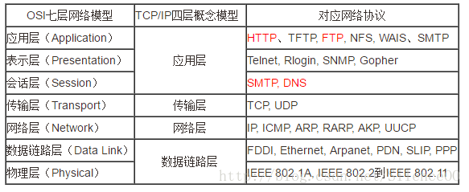

5个层次

因特网协议栈中的5个层次有哪些? 在这些层次中, 每层的主要任务是什么?
Differnece between Transport layer and Network layer
网络层负责ip数据报的产生以及ip数据包在逻辑网络上的路由转发。传输层提供端到端通信服务层次,提供可靠及
非可靠连接。
网络层只是根据网络地址将源结点发出的数据包传送到目的结点（点到点），其主要任务是：通过路由选择算法，
为报文或分组通过通信子网选择最适当的路径。该层控制数据链路层与传输层之间的信息转发，建立、维持和终
止网络的连接。具体地说，数据链路层的数据在这一层被转换为数据包，然后通过路径选择、分段组合、顺序、
进/出路由等控制，将信息从一个网络设备传送到另一个网络设备。而传输层则负责将数据可靠地传送到相应的端
口（端到端），传输层提供了主机应用程序进程之间的端到端的服务。传输层利用网络层提供的服务，并通过传
输层地址提供给高层用户传输数据的通信端口，使高层用户看到的只是在两个传输实体间的一条端到端的、可由
用户控制和设定的、可靠的数据通路。
第五层——应用层(application layer)
• 应用层(application layer)：是体系结构中的最高。直接为用户的应用进程（例如电子邮件、文件传输
和终端仿真）提供服务。
• 在因特网中的应用层协议很多，如支持万维网应用的HTTP协议，支持电子邮件的SMTP协议，支持文件传送
的FTP协议，DNS，POP3，SNMP，Telnet等等。
第四层——运输层(transport layer)
• 运输层(transport layer)：负责向两个主机中进程之间的通信提供服务。由于一个主机可同时运行多个
进程，因此运输层有复用和分用的功能
• 复用，就是多个应用层进程可同时使用下面运输层的服务。
• 分用，就是把收到的信息分别交付给上面应用层中相应的进程。
• 运输层主要使用以下两种协议：
(1) 传输控制协议TCP(Transmission Control Protocol)：面向连接的，数据传输的单位是报文段，能够提
供可靠的交付。
(2) 用户数据包协议UDP(User Datagram Protocol)：无连接的，数据传输的单位是用户数据报，不保证提供
可靠的交付，只能提供“尽最大努力交付”。
第三层——网络层(network layer)
• 网络层(network layer)主要包括以下两个任务：
• (1) 负责为分组交换网上的不同主机提供通信服务。在发送数据时，网络层把运输层产生的报文段或用
户数报封装成分组或包进行传送。在TCP/IP体系中，由于网络层使用IP协议，因此分组也叫做IP数据报，或简称
为数据报。
• (2) 选中合适的路由，使源主机运输层所传下来的分组，能够通过网络中的路由器找到目的主机。
• 协议：IP,ICMP,IGMP,ARP,RARP
第二层——数据链路层(data link layer)
• 数据链路层(data link layer)：常简称为链路层，我们知道，两个主机之间的数据传输，总是在一段一
段的链路上传送的，
也就是说，在两个相邻结点之间传送数据是直接传送的(点对点)，这时就需要使用专门的链路层的协议。
• 在两个相邻结点之间传送数据时，数据链路层将网络层交下来的IP数据报组装成帧(framing)，在两个相邻
结点之间的链路上“透明”地传送帧中的数据。
• 每一帧包括数据和必要的控制信息(如同步信息、地址信息、差错控制等)。典型的帧长是几百字节到一千
多字节。
(1)在接收数据时，控制信息使接收端能知道一个帧从哪个比特开始和到哪个比特结束。这样，数据链路层在收到
一个帧后，就可从中提取出数据部分，上交给网络层。
(2)控制信息还使接收端能检测到所收到的帧中有无差错。如发现有差错，数据链路层就简单地丢弃这个出了差错
的帧，以免继续传送下去白白浪费网络资源。如需改正错误，就由运输层的TCP协议来完成。
第一层——物理层(physical layer)
• 物理层(physical layer)：在物理层上所传数据的单位是比特。物理层的任务就是透明地传送比特流。